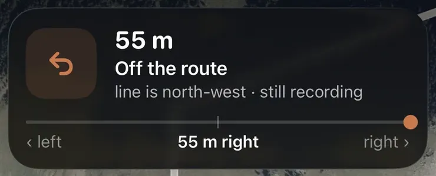

Indulj a kapudtól, a távot szabd az idődhöz, és a nehéz döntéseket hozd meg még otthon. Jó útvonal az, amin futás közben nem kell gondolkodnod: pont olyan hosszú, amilyennek kell, a formája illik a naphoz, az emelkedők nem érnek meglepetésként, a talaj futható, sötétben van világítás, hosszú futáson pedig víz. Ha ez megvan, tedd fel az útvonalat a telefonodra vagy az órádra, és bízd rá a kanyarokat.
>1,5×annyi energia méterenként 10%-os emelkedőn, mint síkonMinetti és mtsai, 2002
3 formaoda-vissza, kör vagy A-ból B-be: azt válaszd, amelyik illik a naphozEz az útmutató
7 napa Flyover ennyi napra visszamenőleg játssza vissza ingyen 3D-ben a futásaidatAera
A legtöbb futást valójában idő szerint méretezzük: munka előtt „40 perc lazán”, vagy vasárnap egy óra. Indulj ki tehát a rendelkezésedre álló percekből és abból a tempóból, amit lazán futsz, és ebből számolj távot. A Milyen messzire futok? kalkulátor kiszámolja helyetted, és egy friss versenyidőből a laza tempódat is megbecsli.
Indulj a kapudtól. Ha az útvonal otthonról indul és oda ér vissza, nincs autózás, nincs parkolás, és eggyel kevesebb kifogásod marad. A legtöbb településen egy-két kilométeren belül több futható terep van, mint gondolnád.
Mérj, ne becsülj. Olyan térképen rajzold meg a vonalat, ami rajzolás közben mutatja a távot. A kanyarok, a háztömbök megkerülése és a visszaút mind összeadódik.
Tervezz be rövidítést. Legyen egy-két pont, ahol lerövidítheted az útvonalat, ha a lábad vagy az időjárás cserben hagy.
Oda-vissza, kör vagy A-ból B-be
Oda-vissza. Fusd le az időd vagy a távod felét, fordulj meg, és ugyanazon az úton gyere haza. Ezt a legkönnyebb megtervezni és beosztani, a visszautat már ismered, és bármikor korábban megfordulhatsz. Ha odafelé emelkedő vagy szembeszél van, visszafelé gyorsabb leszel. Hátránya, hogy mindent kétszer látsz.
Kör. Végig új terep, és nem kell ugyanott visszajönnöd. A legtöbbeknek ez a legkellemesebb forma, de a túlsó oldalon már nehéz lerövidíteni, és több tervezés kell hozzá, hogy pont a kívánt távra jöjjön ki. Egy kisebb, ismételhető kör, például egy park körül, megadja a kör változatosságát, és közben könnyű kiszállni belőle.
A-ból B-be. Egyik pontból a másikba, aztán vonattal, busszal vagy autóval haza. Munkából hazafelé vagy egy hosszú folyó- vagy tóparti futáshoz ideális. Indulás előtt nézd meg a hazautat, főleg késő délután vagy este.
Emelkedők, és mit tesznek az időddel
Az útvonaltervek többnyire az emelkedőkön csúsznak el. Két egyforma hosszú útvonal lefutása egészen különböző ideig tarthat. Minetti és munkatársai (2002) futópadon mérték a futókat a meredek lejtőtől a meredek emelkedőig: 10 százalékos emelkedőn a futás méterenként több mint másfélszer annyi energiába került, mint síkon. Az enyhe lejtő olcsóbb volt a síknál, egy bizonyos meredekség után viszont a költség újra nőtt, mert a lábad minden lépésnél fékez. Vernillo és munkatársai (2017) összefoglalójukban ugyanezt a mintázatot írták le, és azt is, mennyire megterheli az izmokat a meredek lejtő.
Az emelkedő sokkal többe kerül a síknál. A lejtő csak egy részét adja vissza.
Szemléltetés Minetti és munkatársai (2002) futópados méréseire illesztett görbéje alapján. Mennyi energiába kerül egy méter futás az egyes meredekségeken, a síkhoz képest. 10%-os emelkedőn több mint másfélszer annyiba; az enyhe lejtő olcsóbb, egy bizonyos meredekség után viszont a költség újra nő, mert a lábad minden lépésnél fékez.Bővebben
A tervezésben ez a következőt jelenti:
Ne csak a távot nézd, hanem a teljes szintemelkedést is. Egy sík 8 km és egy dombos 8 km két különböző futás. Ugyanakkora erőfeszítéssel a dombos lassabb lesz.
Tedd oda az emelkedőt, ahová akarod. Laza napon könnyebb az elején emelkedni, amíg friss vagy, és lefelé vagy síkon hazaérni. Dombfutásnál épp fordítva: ott pont az emelkedő a cél.
Dombos útvonalon ne a tempóból ítéld meg a formádat. Az emelkedőhöz igazított tempó (grade-adjusted pace) minden emelkedőt és lejtőt átvált arra a sík tempóra, amennyit ért, így egy lassú emelkedő is megkapja, ami jár neki. Bővebben: mi az emelkedőhöz igazított tempó (angolul).
Talaj
Aszfalt és járda. Gyors, kiszámítható, többnyire kivilágított, és könnyű lemérni. Osztozol rajta az autókkal, a kereszteződésekkel és a gyalogosokkal.
Parki utak és murva. Puhább és nyugodtabb, kicsit lassabb. Laza futáshoz ideális.
Terep. Gyökerek, kövek, eső után sár és több emelkedő. Ugyanakkora erőfeszítéssel lassabb leszel, és ez a talaj miatt van, nem a formád miatt. Hagyj rá több időt, és figyelj jobban.
Atlétikai pálya (rekortán). Pontos távok, nincs forgalom, ezért ez a legjobb hely az intervallhoz. Hosszú futáshoz unalmas.
Nyugodtan keverheted a talajokat. A legfontosabb, hogy illjen az edzéshez: a tempófutáshoz sima, egyenletes talaj kell, egy laza futás nyugodtan kalandozhat.
Világítás és biztonság
Sötétben válassz kivilágított utcákat és utakat, amiket ismersz, a kivilágítatlan erdei ösvényeket pedig hagyd nappalra.
Legyél látható. Wood és munkatársai (2005) azt vizsgálták, mennyire ismerik fel az autósok éjszaka a gyalogosokat. A test mozgó részein, például a bokán és a térden viselt fényvisszaverő csíkokkal az embereket sokkal könnyebb volt felismerni, mint csak egy láthatósági mellénnyel, sötét ruhában pedig alig vették észre őket. Egy fejlámpa vagy egy csiptetős lámpa a talajt is megvilágítja.
Ahol nincs járda, a forgalommal szemben fuss, hogy lásd, mi jön.
Szólj valakinek, merre futsz, vagy oszd meg a helyzetedet, ha egyedül futsz egy csendes helyen, és legyen nálad a telefonod.
Ismerd a kiszállási pontokat. Hosszú útvonalon jegyezd meg, hol vannak utak, megállók vagy forgalmasabb helyek, ha meg kellene állnod.
Víz
Az Amerikai Sportorvosi Kollégium (ACSM) folyadékpótlási állásfoglalása (Sawka és munkatársai, 2007) fix mennyiség helyett személyre szabott tervet javasol: igyál annyit, hogy ne veszíts sokat a testsúlyodból izzadással, de ne is annyit, hogy edzés közben nőjön a testsúlyod. A szükséglet nagyon eltér a meleg, a testméret és a tempó szerint.
Sokan egy rövid, laza futást enyhe időben víz nélkül is megoldanak.
Hosszú vagy meleg futáson tervezd bele a vizet az útvonalba: ivókutak, boltok, kávézók, vagy egy kör, ami elhalad a házad előtt, így az ajtó mellé kikészíthetsz egy kulacsot.
Nézd meg, hogy működnek-e az ivókutak. Sok ivókutat télre elzárnak.
Mennyi ideig fog tartani?
Egy egyszerű módszer, hogy indulás előtt megbecsüld:
Egy útvonal őszinte ideje a saját futásaidból adódó tartomány, nem egyetlen szám egy térképről.
Kezdd a sík számítással. A táv osztva a laza tempóddal. Ha fordítva számolnál, percekből távot, használd a Milyen messzire futok? kalkulátort.
Adj hozzá időt az emelkedőkre. Minél többet emelkedik az útvonal, annál lassabb leszel ugyanakkora erőfeszítéssel. A meredek lejtők nem adják vissza az egészet.
Adj hozzá időt a megállásokra. Kereszteződések, lámpák, kapuk és egy korty víz. A mozgásban töltött idő és az, amit hazaérve az órán látsz, nem ugyanaz.
A saját előzményeidben bízz a legjobban. A legjobb becslés egy tartomány a hasonló terepen futott friss futásaidból, nem egyetlen szám egy térképről. Bővebben: mennyi idő alatt futom le ezt az útvonalat? (angolul)
Útvonal iPhone-on és Apple Watch-on: a lehetőségek
Három gyakori módja van, hogy egy megtervezett útvonal a csuklódra vagy a füledbe kerüljön:
Egy térképalkalmazás gyalogos útvonaltervezése. Arra jó, hogy gyalog eljuss A-ból B-be. A leggyorsabb utat keresi valahová, nem egy adott hosszúságú futást, és kört sem tervez helyetted.
GPX-fájl. A GPX az útvonalak elterjedt fájlformátuma. Versenyszervezők, túraoldalak, klubok és barátok így osztják meg az útvonalakat, és a legtöbb futóapp meg tudja nyitni.
Futóapp útvonaltervezővel. Megrajzolod az útvonalat, az app ráilleszti a valódi utakra, elküldi az órára, és az óra futás közben vezet.
Bármit használsz, ezeket nézd meg, mielőtt futás közben rábíznád magad:
A vonal a valódi utakon marad, vagy átvág épületeken és szántóföldeken?
Rajzolás közben mutatja a távot?
Meg tud nyitni egy GPX-fájlt?
Az óra minden kanyar előtt figyelmeztet, rezgéssel vagy hangosan?
Szól, ha letértél az útvonalról?
Térerő nélkül is működik, egy erdőben vagy a hegyekben?
Mennyibe kerül, és mi van előfizetés mögött?
Így csinálja ezt az Aera

Letértél az útvonalról az AerábanHa letérsz a megtervezett vonalról, a sáv megmondja, milyen messze vagy, és merre van a vonal, alatta pedig látod, melyik oldalán jársz. A futás rögzítése közben folytatódik.
Az Aera, iPhone-ra és Apple Watch-ra
Az Aera útvonaltervezője ingyenes. Koppints a térképre, és rajzolj útvonalat: a vonal a valódi utakon marad, a táv pedig rajzolás közben számolódik. Vagy nyiss meg egy GPX-fájlt. Aztán kövesd kanyarról kanyarra iPhone-on vagy Apple Watch-on, akár térerő nélkül is. Minden kanyar előbb szól, mint odaérsz, és az app szól, ha letérsz az útvonalról, és ha visszatérsz rá. Az órán a futást önmagában is rögzítheted, és minden kanyart érzel a csuklódon.
A kanyarról kanyarra navigáció is ingyenes. A Premium minden útvonalat megőriz, amit rajzolsz; az első ingyen is megmarad. Futás után a Flyover (angolul) 3D-ben visszajátssza a futásodat a valódi terep fölött, az elmúlt hét nap futásainál ingyen.
Az Aera az Apple Health adataiból dolgozik, iPhone-on és Apple Watch-on. Nincs fiók, és az egész alkalmazás magyarul van. Egy megtervezett vonal nem látja a lezárt kaput, a friss sarat vagy az útépítést, ezért figyelj, merre jársz.
Indulj a saját kapudtól. A rendelkezésedre álló időből és a laza tempódból számold ki a távot, aztán válassz formát: oda-vissza, kör vagy A-ból B-be. Nézd meg, mennyi benne az emelkedő, milyen a talaj, van-e világítás, ha sötétben futsz, és hol jutsz vízhez egy hosszú vagy meleg futáson. Végül tedd fel az útvonalat a telefonodra vagy az órádra, hogy útközben ne a kanyarokon kelljen gondolkodnod.
Kört fussak vagy oda-vissza?
A naptól függ. Az oda-vissza a legegyszerűbb: az időd felénél megfordulsz, a hazautat már ismered, és bármikor lerövidítheted. A kör végig új terepet ad, és nem kell ugyanott visszajönnöd, de ha már messze vagy otthonról, nehezebb lerövidíteni. Az A-ból B-be futáshoz kell egy hazaút, ezért munkából hazafelé ideális.
Mennyi idő alatt futom le az útvonalat?
Oszd el a távot a hasonló terepen futott laza tempóddal, aztán adj hozzá időt az emelkedőkre és a kereszteződéseknél való megállásokra. Az emelkedő sokkal többe kerül, mint a sík, ezért egy dombos útvonal tovább tart, mint amit a táv sugall. A legőszintébb válasz egy tartomány a saját, hasonló útvonalakon futott friss futásaidból, nem egyetlen szám.
Lehet kanyarról kanyarra navigációt kapni futáshoz Apple Watch-on?
Igen, egy olyan alkalmazással, ami elküldi a megtervezett útvonalat az órára. Az Aera ingyen tudja: rajzolj a térképen útvonalat, ami a valódi utakon marad, vagy nyiss meg egy GPX-fájlt, aztán kövesd kanyarról kanyarra iPhone-on vagy Apple Watch-on, akár térerő nélkül is. Szól, ha letérsz az útvonalról, és ha visszatérsz rá.
Minetti AE, Moia C, Roi GS, Susta D, Ferretti G. Energy cost of walking and running at extreme uphill and downhill slopes. Journal of Applied Physiology. 2002;93(3):1039-1046.
Vernillo G, Giandolini M, Edwards WB, et al. Biomechanics and Physiology of Uphill and Downhill Running. Sports Medicine. 2017;47(4):615-629.
Wood JM, Tyrrell RA, Carberry TP. Limitations in drivers' ability to recognize pedestrians at night. Human Factors. 2005;47(3):644-653.
Sawka MN, Burke LM, Eichner ER, Maughan RJ, Montain SJ, Stachenfeld NS. American College of Sports Medicine position stand. Exercise and fluid replacement. Medicine and Science in Sports and Exercise. 2007;39(2):377-390.
 Vagy olvasd be az iPhone-oddal
Vagy olvasd be az iPhone-oddal